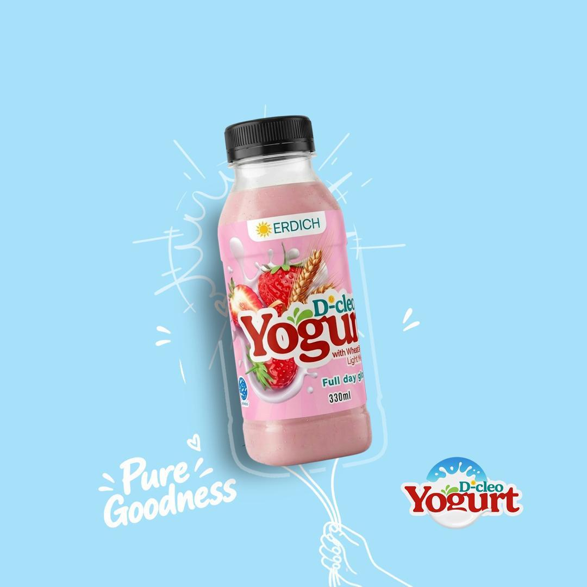

Full day glory!
D-cleo is a creamy drinking yogurt with live probiotic cultures, made from premium whole milk from grass-fed cows. It comes in four flavours, as a classic yogurt or blended with wheat berries for a satisfying light meal.

Apple

Four flavours, two ways
Each flavour comes as a classic yogurt, or as a light meal blended with wholesome wheat berries.
Nutrition Facts
Serving size: 1 bottle, 330ml / 328g
Calories240
| % Daily Value | |
| Total Fat 4.5g | 6% |
| Saturated Fat 2.5g | 13% |
| Trans Fat 0g | |
| Cholesterol 15mg | 5% |
| Sodium 160mg | 7% |
| Total Carbohydrate 37g | 13% |
| Dietary Fiber 3g | 11% |
| Total Sugars 16g | |
| Includes 5g Added Sugars | 10% |
| Protein 13g | 26% |
| Vitamin D 2.5mcg | 15% |
| Calcium 400mg | 30% |
| Iron 1.6mg | 9% |
| Phosphorus 320mg | 25% |
| Potassium 510mg | 10% |
The % Daily Value (DV) tells you how much a nutrient in a serving of food contributes to a daily diet. 2,000 calories a day is used for general nutrition advice.
Ingredients
Low-fat milk, live active yogurt cultures, filtered water, natural flavour, low sugar.
Crafted with care
Made with premium, balanced whole milk from grass-fed cows.
Storage
Keep refrigerated. Shake well before opening.
Certified
FDA registration: FDA/DA12-040. Contains probiotics. Proudly made in Ghana.
Produced & packaged by
Erdich, Amarhia, off Adenta Dodowa Road, P.O. Box 309, Kanda, Ghana.
Bring D-cleo to your store
Call +233 (0) 55 015 6745 or send us a message for wholesale orders.